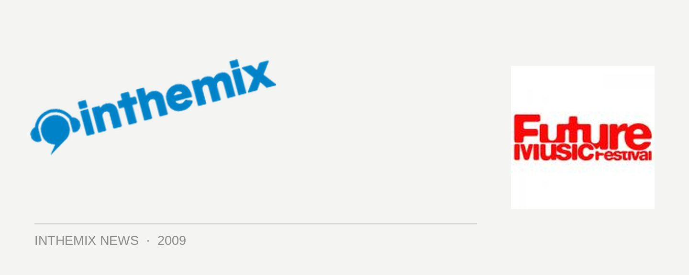

Future Music Festival 2010 lineup lands
CHECK OUT ITM’S FUTURE MUSIC FESTIVAL ARTIST GALLERY
Future Music Festival was a clear winner for ITMers in this year’s Sony inthemix50, chosen as our favourite event across several cities and in 2010 it will of course be back. ITM can now reveal the absolutely massive list of artists who will be playing on the tour! It’s a healthy mix of old favorites as well as plenty of new surprises, with a roster of DJs and live acts that will see the Future Music Festival staying true to its roots, while also pushing things in an exciting new direction.
At the top of the list are live titans The Prodigy, returning after blowing away tens of thousands of punters on the Big Day Out tour earlier this year. Accompanying them will be a number of acts that are part of Future strategy to push their festival in more a of ‘live’ direction – with Scottish cross-over rockers Franz Ferdinand playing alongside Empire Of The Sun, Booka Shade and Does It Offend You, Yeah?. It’s a selection of bands that will no doubt see the festival drawing a much wider audience next year.
But that’s not to say that lovers of pure dance culture have been neglected, as the roster of DJs on this year’s lineup is simply huge. Bedrock maestro John Digweed is returning to FMF along with the iconic Sven Vath, while trance titans Above & Beyond will be making their debut on the tour.
House fans will be represented by David Guetta and Erik Morillo, and there’s still plenty more acts to be announced. Simply massive.
Future Music Festival 2010 lineup:
The Prodigy
Empire Of The Sun
Franz Ferdinand
Booka Shade
John Digweed
Sven Vath
David Guetta
Erick Morillo
Above & Beyond
Dubfire
Boys Noize
Does It Offend You, Yeah?
And many more to be added!
CHECK OUT ITM’S FUTURE MUSIC FESTIVAL ARTIST GALLERY
ITM will have plenty more on the way in the lead up to Future Music Festival 2010, so stay tuned to our FMF festival page for all the updates. In the meantime, check out the full dates for the national tour below and get excited!
Future Music Festival – National Tour Dates
Brisbane – Saturday Feb 27
Perth – Sunday Feb 28
Sydney – Saturday March 6
Melbourne – Sunday March 7
Adelaide – Monday March 8